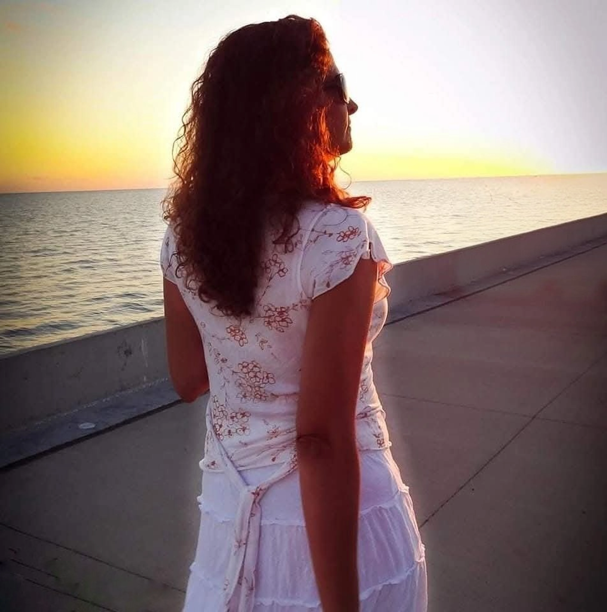
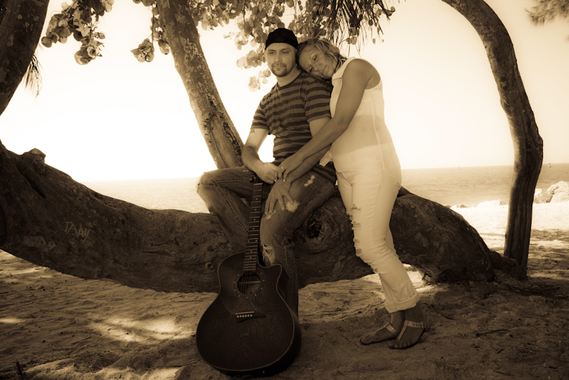

Savior Productions
Photography, film & the moments between.
Explore the work
Beth Rooney, photographed by the sea.
Beth Rooney
Founder & CEO, Savior Productions
A life behind the scenes.
An eye for what matters.
Beth’s work moves between television, photography and film. An Emmy Award-winning sound engineer, producer and stage manager, she began her television career at MTV Networks.
Her television experience includes Inside the Actors Studio, The View and Late Night with Conan O’Brien. A Fashion Institute of Technology graduate, she brings a background in advertising and communications to her creative work.
Behind the camera, she photographs portraits, musicians, weddings and film sets. Her photography has been exhibited in galleries throughout the New York and New Jersey area.
The work
A face. A stage. A whole new chapter.
Every frame starts with a connection.
Photography by Savior Productions.
Plan your shootThe studio
Photography and production, with the eye of an artist and the experience of a television crew.
Photography
People in their element, on stage and on the days that matter.
- Portraits & headshots
- Musicians & bands
- Weddings & engagements
- Set photography
Film & video
From an idea to a finished film, shaped around the story you want to tell.
- Music videos
- Corporate videos
- Wedding films
- Independent film
Sound & production
Broadcast experience behind the scenes, bringing care to what an audience sees and hears.
- Production planning
- Sound engineering
- Stage management
- Creative collaboration
Direct to vinyl
Step inside a recording session at Leesta Vall. A performance captured in the room, as it happens.
Leesta Vall Office Sessions
Watch on YouTubeYour turn
behind the lens.
Explore the EOS camera, find your angle and make a portrait of your own. Change the mood, set the timer and take your shot.
Open the camera studioCamera access is your choice. Your photos stay on your device.
Let’s create
together.
A portrait, a performance, a wedding, a film. Tell Beth what you have in mind.
347 880 2312Call Beth to talk about your project.
